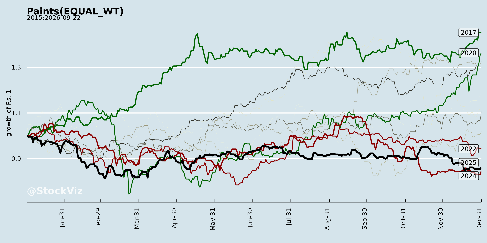
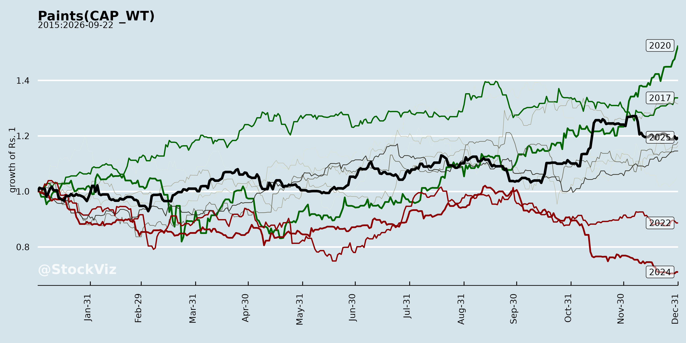
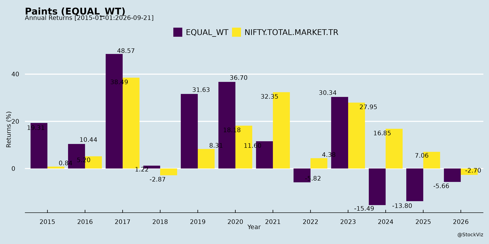
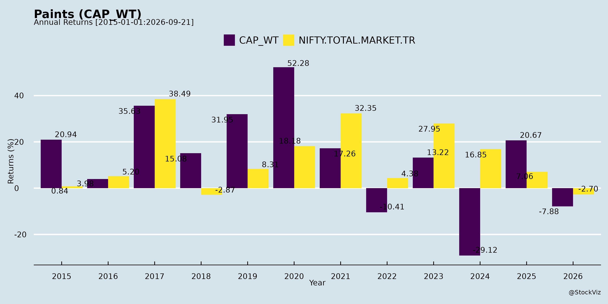
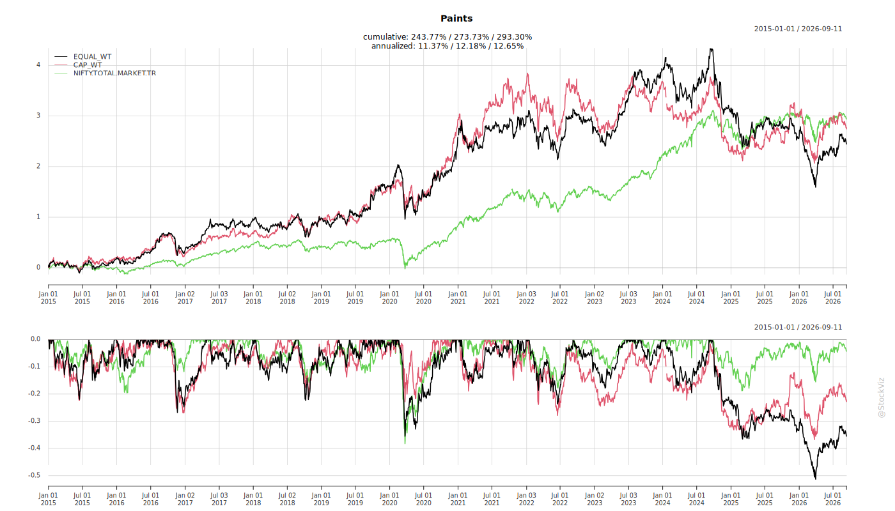
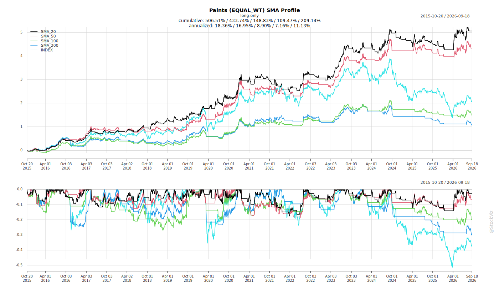
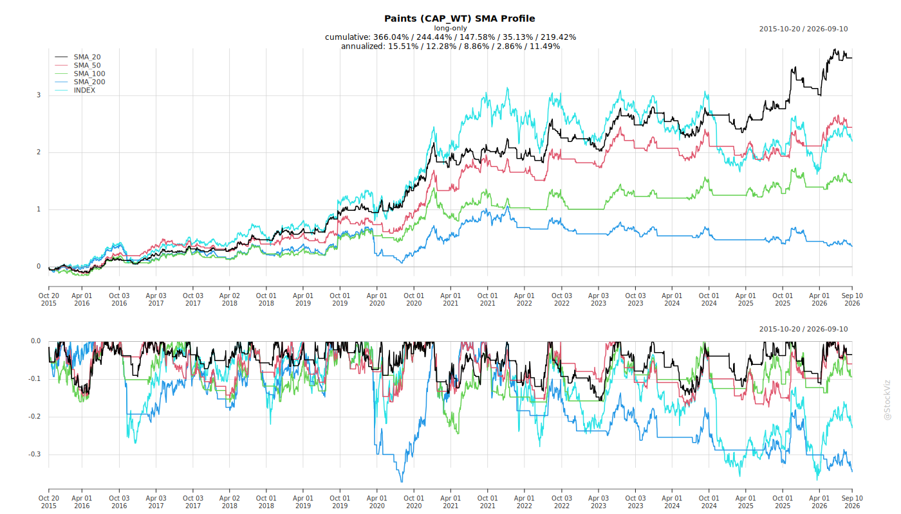
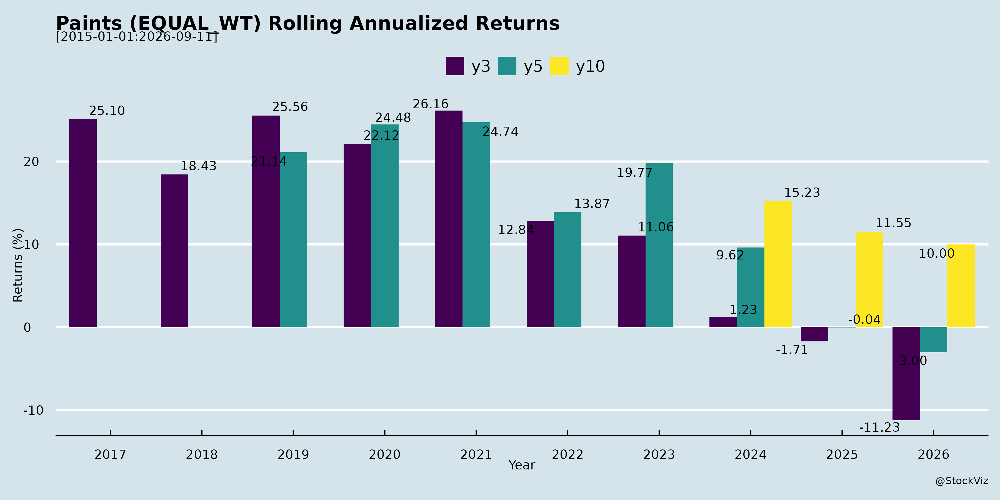
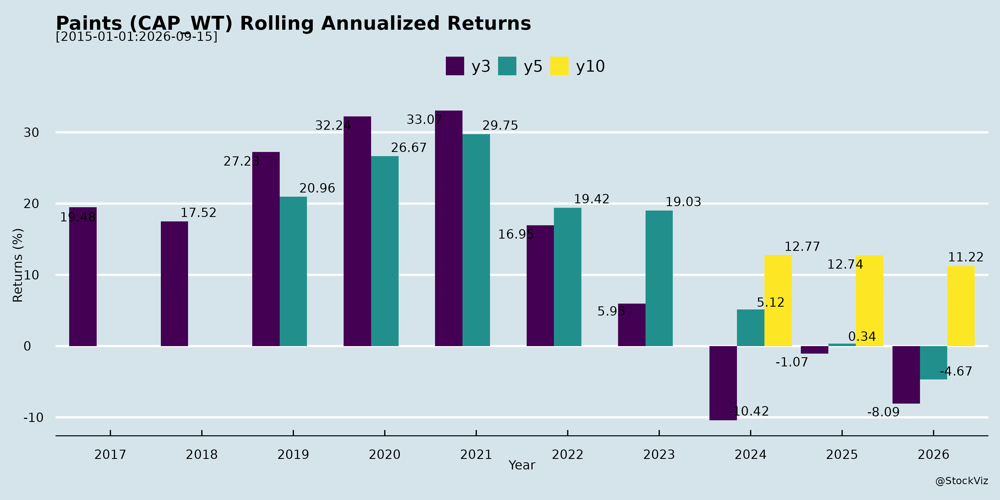

asof: 2025-11-27
Indian Paints Industry Analysis: Headwinds, Tailwinds, Growth Prospects, and Key Risks
The Indian paints industry (valued at ~₹1 lakh crore, dominated by decorative ~85% and industrial ~15%) faced a challenging Q2 FY26 due to extended monsoons and competitive pressures, as evidenced across transcripts from AkzoNobel India, Indigo Paints, Kansai Nerolac, Berger, Kamdhenu, Sirca Paints, and others. Overall revenue growth was muted (flat to low single-digit for leaders like Kansai Nerolac; stronger for niche players like Sirca at 24% YoY), with volumes showing early recovery but margins pressured. Premium segments outperformed mass/economy. Here’s a structured analysis:
Headwinds (Key Challenges in Q2 FY26)
Tailwinds (Supportive Factors)
Growth Prospects (H2 FY26 & Beyond)
| Company Snapshot | Q2 Revenue Growth (YoY) | EBITDA Margin | Key Outlook |
|---|---|---|---|
| AkzoNobel | -1.5% | 11.1% | Double-digit Q4 volumes |
| Indigo | +3.5% | 15.3% | H2 double-digit; peak Q4 |
| Kansai Nerolac | +0.4% | ~13% | Q4 uplift; 13-15% long-term |
| Sirca | +24% | 20.9% | 35-40% CAGR to ₹1,000 Cr FY30 |
Key Risks
Summary
The industry navigated a weak Q2 (monsoon-led demand dip, competition) with resilient volumes (+3-5% avg.) and premium outperformance, but revenues flat amid price/mix headwinds. Tailwinds from policy/infra, RM softening, and H2 seasonality signal recovery (double-digit growth expected Q4/H2). Growth hinges on premiumization, industrial infra, and niches (wood/waterproofing; 9-10% industry CAGR). Leaders eye 13-16% margins; risks center on pricing wars and macros. Overall Outlook: Cautiously Optimistic – structural positives outweigh cyclical pain, favoring premium-focused players (e.g., Sirca/Indigo outperforming). Investors should monitor Q3 demand indicators (dealers scanning, collections) and RM trends.
asof: 2025-11-27
Indian Paints Sector Analysis: Headwinds, Tailwinds, Growth Prospects, and Key Risks
Based on the provided regulatory filings from key players (Akzo Nobel India, Asian Paints, Berger Paints, Indigo Paints, Kamdhenu Ventures, Kansai Nerolac, Shalimar Paints, Sirca Paints), the analysis focuses on the Indian paints sector. Indigo Paints provides the most detailed financial insights (Q2/H1 FY26 results), while others highlight M&A (JSW’s Akzo acquisition), ESG, governance, and administrative updates. Sector context includes oligopolistic structure (Asian Paints dominant), real estate-driven demand, and emerging consolidation.
Tailwinds (Positive Factors)
Headwinds (Challenges)
Growth Prospects
| Metric | Key Insights | Outlook |
|---|---|---|
| Revenue | Indigo H1: +1.7% YoY consolidated (₹621 Cr); Q2 +4.2%. | 8-12% CAGR FY26-28; driven by volumes (underpenetrated rural/housing), exports, and JSW-led consolidation. Premium decorative/industrial paints key. |
| Margins | EBITDA: Indigo H1 14.6% (consolidated, +2.2% YoY). | 15-17% sustained via premiumization/raw mix optimization. |
| Capacity | Indigo CWIP ₹22 Bn (+63% YoY); capex focus. | Expansions (Indigo, post-JSW Akzo) to tap ₹1 Tn+ market by 2030. |
| M&A | JSW-Akzo deal closing imminent. | More deals; smaller players (Indigo/Sirca) as tuck-ins. |
Key Risks
| Risk Category | Description | Mitigation/Impact |
|---|---|---|
| Competitive | JSW disruption; price wars. | High (market share erosion for #2-4 players like Berger/Kansai). |
| Cost Volatility | Crude/chemicals (60% of costs); Indigo raw materials stable but monitored. | Medium; hedging/premiumization buffers. |
| Regulatory/Debt | LODR 30A disclosures (Akzo covenants trigger defaults on disposals); SEBI reclassification scrutiny (Shalimar). | Medium; compliance routine but covenants limit flexibility. |
| Execution | Capex delays (Indigo cash burn); monsoon/recovery. | High short-term; capex ROI critical. |
| Governance | Promoter exits (Shalimar); ESG gaps (Berger 61 score). | Low; strong board approvals (Sirca). |
Summary: The sector enjoys tailwinds from premiumization, M&A (JSW catalyst), and realty demand, with modest H1 growth (Indigo proxy: +2% revenue, +5% PAT). Headwinds include monsoons/competition, but prospects remain robust (10%+ CAGR) via capacity and consolidation. Key risks center on JSW-induced disruption and covenants; monitor Q3FY26 for post-monsoon rebound. Bullish long-term, cautious near-term.
asof: 2025-11-27
Indian Paints Sector Analysis: Headwinds, Tailwinds, Growth Prospects, and Key Risks
The Indian paints sector, dominated by decorative (~75-80% of market) and industrial segments, faced a challenging H1 FY26 (Apr-Sep 2025) per company transcripts (AkzoNobel, Berger, Indigo, Kansai Nerolac, Kamdhenu, Sirca). Industry growth was muted (flat to low single-digit YoY), impacted by monsoons, but premiumization and infrastructure tailwinds offer recovery potential. Market size: ~₹1 lakh crore (decorative dominant); wood coatings niche ~₹9,500-10,000 crore.
Headwinds (Challenges Observed in Q2/H1 FY26)
Tailwinds (Positives Driving Resilience)
Growth Prospects
| Company | Q2 Revenue YoY | EBITDA Margin | Volume Guidance |
|---|---|---|---|
| AkzoNobel | -1.5% | 11.1% | Mid-single to double-digit |
| Indigo | +3.5% | 15.3% | Double-digit Q4 |
| Kansai | +0.4% | Stable | High single-digit H2 auto |
| Sirca | +24% | 20.9% | 35-40% FY26 |
| Kamdhenu | +4% | 6.5% | Premium focus |
Key Risks
Summary
Outlook: Cautiously optimistic. H1 headwinds (monsoons, competition) capped growth (industry ~0-5% YoY), but Q3-4 tailwinds (premiumization, policy boosts, infra) signal recovery. Prospects strong in premium/industrial (double-digit); niche (wood coatings) explosive (30-40% CAGR). Margins resilient (13-20%) via mix/raws, but risks from pricing/weather persist. Sector poised for 8-10% CAGR to FY30, led by urbanization/infra; watch competition intensity. Investors: Favor premium-focused players (e.g., Sirca, Indigo) for outperformance.
Copyright © 2023 SAS Data Analytics Pvt. Ltd. All rights reserved.